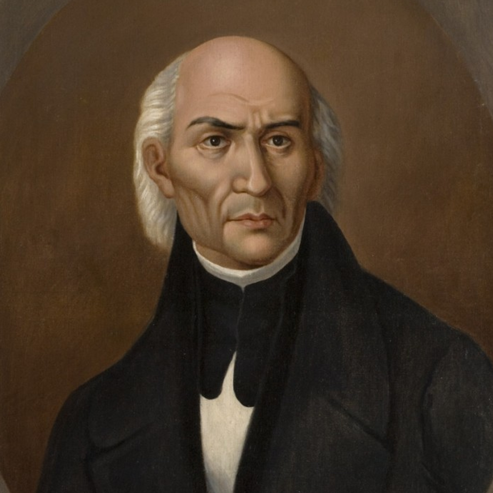
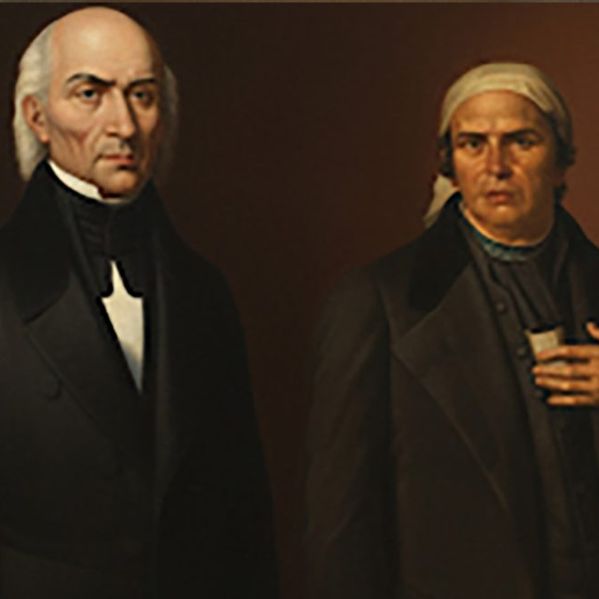
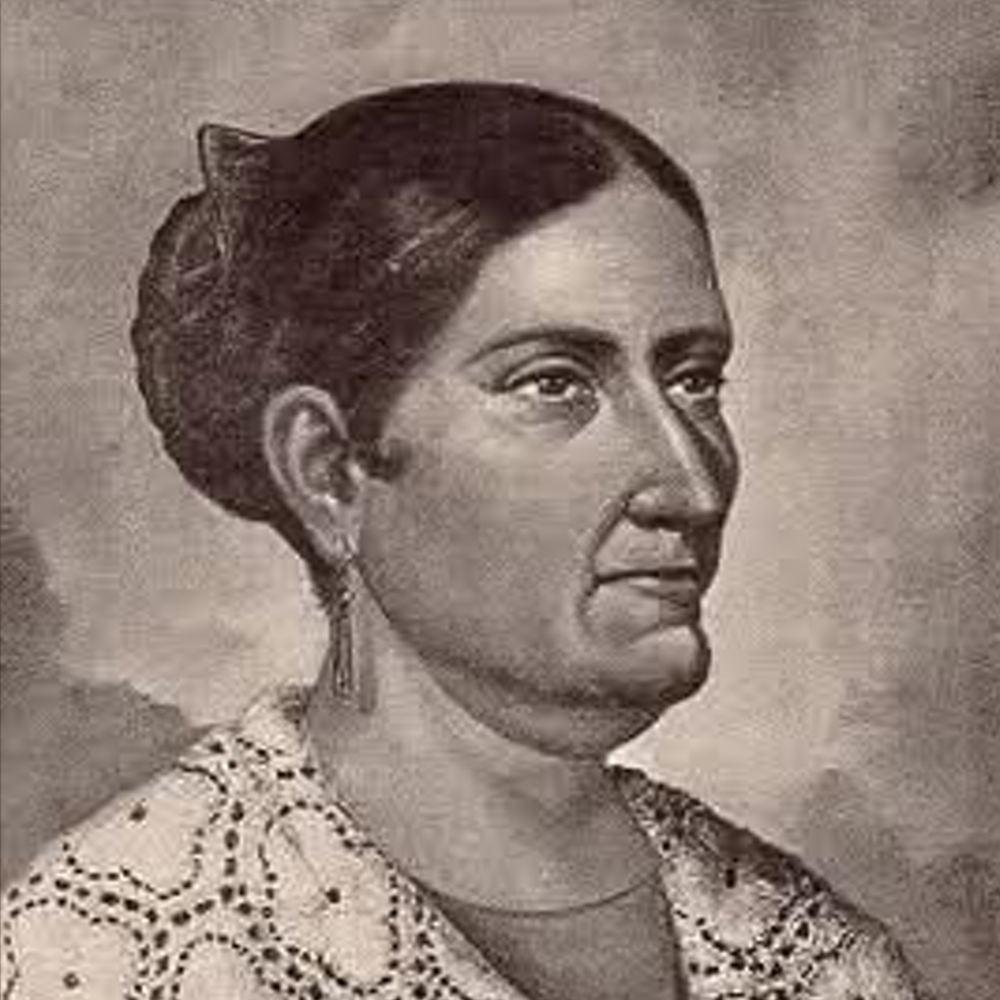
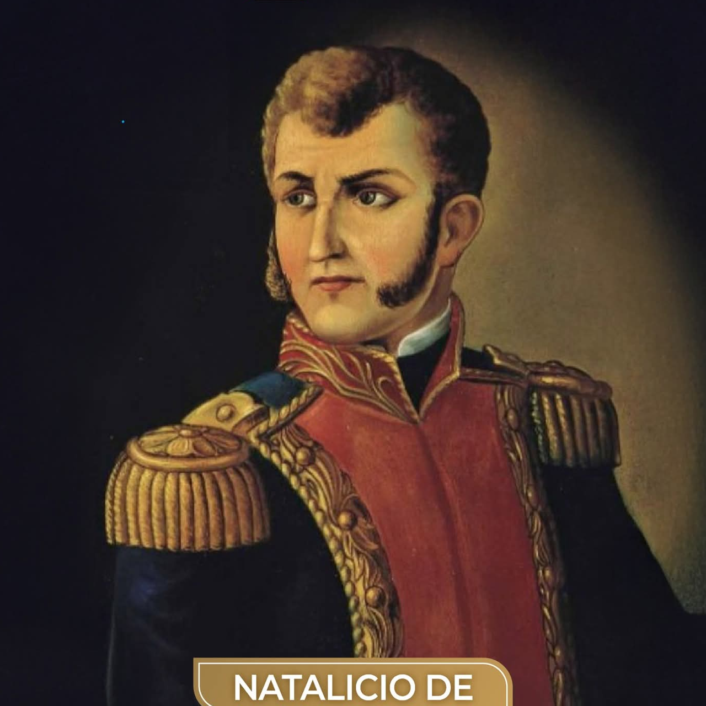
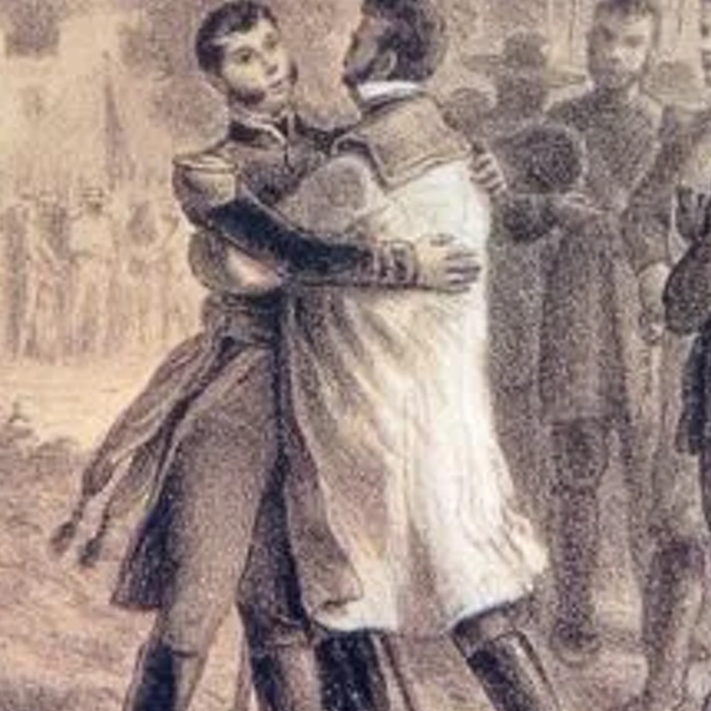
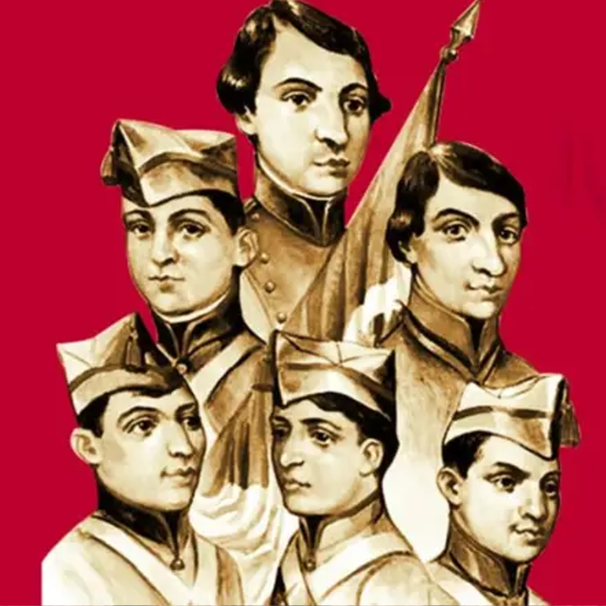

- Miguel Hidalgo y Costilla: Sacerdote considerado el Padre de la Patria. Dio el Grito de Dolores la madrugada del 16 de septiembre de 1810 para iniciar la lucha.

- José María Morelos y Pavón: Sacerdote y estratega militar. Organizó el Congreso de Chilpancingo y escribió los Sentimientos de la Nación.

- Josefa Ortiz de Domínguez: Conocida como La Corregidora. Alertó a los insurgentes sobre el descubrimiento de la conspiración de Querétaro.

- Ignacio Allende: Militar y co-conspirador clave en el inicio del movimiento insurgente.

- Vicente Guerrero y Agustín de Iturbide: Encabezaron la entrada del Ejército Trigarante a la Ciudad de México el 27 de septiembre de 1821, sellando la independencia.

- Los Niños Héroes: Cadetes del Heroico Colegio Militar que defendieron el Castillo de Chapultepec el 13 de septiembre de 1847 frente a las tropas estadounidenses.